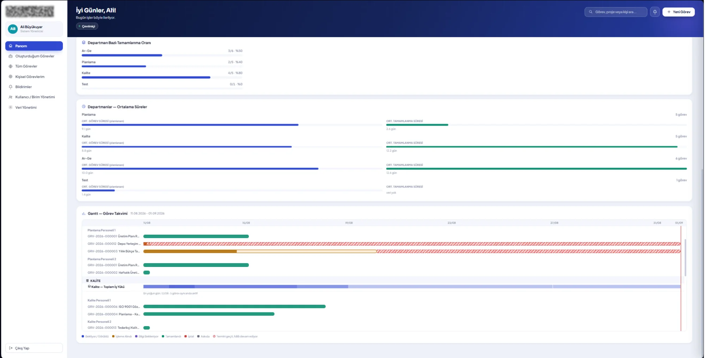
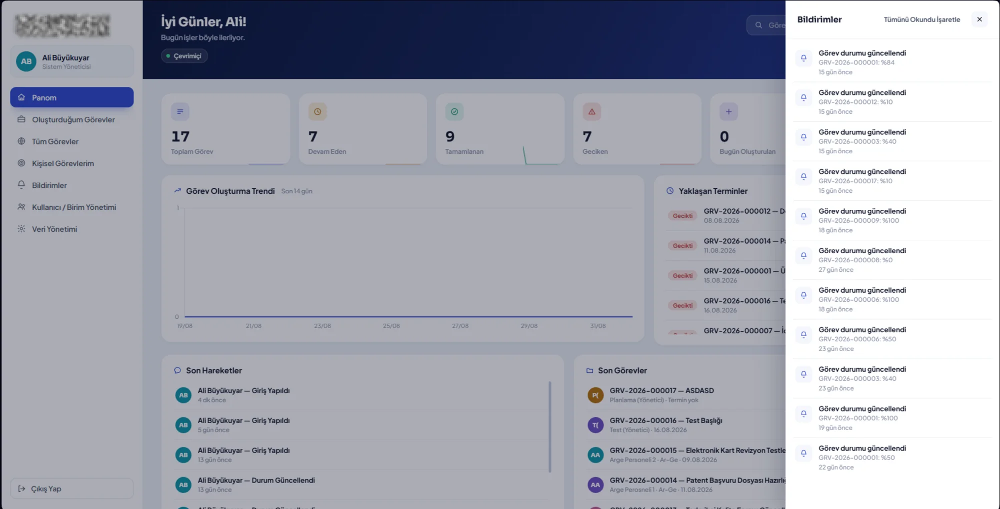
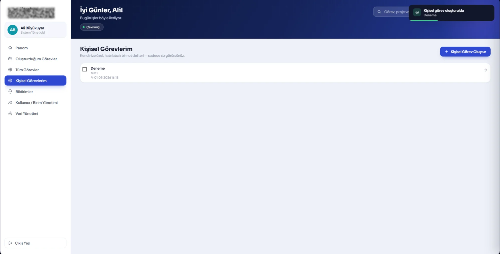

hurdanın geri dönüştürülmesiyle maliyet kazancı (Empero)
Profil
Ham veriyi karar destek raporlarına, süreç verimsizliklerini ölçülebilir maliyet kazancına dönüştürüyorum.
2018'den bu yana muhasebe, üretim planlama, kalite kontrol ve raporlama görevlerinde çalıştım. Bugün FİMAK Makina'da üretim, depo, satış ve maliyet verisini yönetimin günlük kullandığı raporlara ve uygulamalara dönüştürüyorum.
Excel VBA ve SQL ile başlayan araç setim, yapay zekâ destekli geliştirme sayesinde Python, React, .NET ve Three.js ile kurulan web, masaüstü ve mobil uygulamalara genişledi.
Şu an
FİMAK Makina, Veri Analizi ve Raporlama Uzmanı
Konum
Konya, Türkiye
Eğitim
Ankara Üniversitesi, Web Tasarım ve Kodlama
Odak
Raporlama, süreç otomasyonu, dijital dönüşüm
Deneyim
2026Devam ediyor
Veri Analizi ve Raporlama Uzmanı
FİMAK Makina
Üretim ve operasyon verilerini analiz ederek yönetime yönelik KPI ve performans raporları hazırlıyor, karar destek süreçlerine doğrudan katkı sağlıyor.
Depo, B2B satış, üretim ve maliyet verisini birleştiren yönetim raporu ve analiz sitelerini geliştirdi; bu ekranlar yöneticilerin günlük karar aracı olarak kullanılıyor.
Yapay zekâ destekli geliştirme araçlarıyla web, masaüstü (.NET, Electron) ve mobil (.NET MAUI) uygulamalar geliştirerek birim süreçlerini dijital panellerde topluyor.
SQL tabanlı veri altyapıları, Excel VBA ve Outlook otomasyonlarıyla manuel raporlamayı saatlik ve günlük otomatik raporlara dönüştürdü.
20252025-2026
Raportör, Veri Analizi ve Raporlama
Empero Endüstriyel Mutfak Ekipmanları
Firma genelindeki maliyet analizlerini düzenli periyotlarla yürüterek yönetime sunulabilir rapor ve sunum formatına dönüştürdü.
Hesaplama, veri işleme ve raporlama adımlarını uçtan uca Excel VBA ile otomatikleştirerek analiz süresini kısalttı, hata payını azalttı.
20242024-2025
Kalite Kontrol Sorumlusu
Empero Endüstriyel Mutfak Ekipmanları
Üretim süreçlerinde kalite kriterlerine uygunluğu denetleyerek uygunsuzlukları analiz etti, kök neden bazlı çözüm önerileri geliştirdi.
Düzeltici ve önleyici faaliyet (DÖF) süreçlerini koordine etti; kalite yönetim sistemi kapsamında düzenli performans raporlaması yaptı.
20212021-2024
Üretim Planlama Saha Sorumlusu
AYD Automotive
SQL destekli Excel VBA uygulamaları geliştirerek depo, sevkiyat ve üretim veri süreçlerini otomatikleştirdi (5 uçtan uca proje).
Planlama, üretim, depo ve sevkiyat birimleri arasında gerçek zamanlı veri akışı kurarak birimler arası koordinasyonu iyileştirdi.
Personel üretim kayıtlarından performans, üretim adedi ve kayıp zaman analizleri üreterek saha ile planlama arasında karar destek sağladı.
20182018-2019
Muhasebe Stajyeri
Kemal Karabulut SMMM
Günlük mali işlemlerin kaydı, fatura takibi ve arşivleme süreçlerinde muhasebe ekibine veri düzenleme ve raporlama desteği verdi.
FİMAK Makina · 2026
FİMAK'ta geliştirdiğim uygulamalar
Depo, satış, üretim ve maliyet verisini yönetimin ve birimlerin her gün kullandığı ekranlara taşıyan web, masaüstü ve mobil uygulamalar. Ekran görüntülerinde ürün, adet, tutar, müşteri ve kişi bilgileri gizlenmiştir.
KullanımdaWeb uygulaması
Yönetim Raporu
Yöneticinin her sabah açtığı ekran. Depo, B2B satış ve ürün ağacı maliyetini tek sitede birleştirir; altı soru kartının her biri tıkladıkça bir kat daha ayrıntıya iner.
Üç farklı kod sistemini (depo, B2B, maliyet) ortak ürün ailesinde eşleştirir
Yıl sonu tahmini, hedef takibi ve kural tabanlı risk listesi
Kaynak kapalıysa son alınan kopyadan çalışır, Windows açılışında arka planda başlar
PythonFastAPIReactTypeScriptECharts
KullanımdaWeb uygulaması
B2B Satış Analizi
Excel satış raporunun yerini alan analiz sitesi. Satışçı, cari, ürün grubu, il ve ülke kırılımlarını; fiyat, döviz ve iskonto analizlerini 17 ekranda sunar.
Ciro değişimini adet etkisi ve fiyat etkisi olarak ikiye ayırır
Türkiye il ve dünya haritası, dönem karşılaştırma, TL, USD ve EUR görünümü
Saat başı PDF ekli otomatik Outlook raporu; bağlantı koparsa kendini yeniden dener
Node.jsReactEChartsPythonSQL Server
Çalışan prototipWeb, 3D
3D Fabrika İzleme
Siparişleri ve iş emirlerini, fabrikanın yerleşim planından birebir kurulmuş 3D modeli üzerinde ait oldukları hat ve bölgede canlı gösterir.
DWG planı Python ile işlendi, makine modelleri Blender ile üretilip GLB olarak sıkıştırıldı
Gece ve gündüz döngüsü, yürüyüş modu, gecikme yoğunluk haritası
Genel bakış, hatlar, gecikmeler ve sevkiyat dahil 8 ekran
React Three FiberThree.jsBlenderNode.js
KullanımdaWeb uygulaması
Depo Stok Paneli
Excel'deki VBA stok kurallarını Python'a birebir taşıyan depo ve üretim hattı paneli. Sevke hazır, satışa uygun ve cariye ayrılmış makineleri depo bazında gösterir.
Fuar standı için dokunmatik sorgu ve termin hesaplama ekranı
Kendi küçük sorgu dili ve müşteri adı göndermeden yapay zekâ ile stok yorumu
10 dakikada bir SQL yenileme, A4 PDF rapor
PythonFastAPIReactFluent UIExcel COM
IBAKTECH 2026'da kullanıldıWeb uygulaması
Fuar Görüşme Raporu
Fuar boyunca ziyaretçi görüşmelerini canlı izleyen pano. Satışçı, sonuç, ülke ve sektör dağılımını anlık gösterir.
Saat başı ayrıntılı PDF ve gün karşılaştırması Outlook ile otomatik gönderilir
Göndermeden önce taslağı Outlook'ta gösteren test modu
Gün karşılaştırma ekranı, Excel ve A4 PDF çıktısı
Node.jsPythonOutlook COMHeadless Chrome
DemoMasaüstü uygulaması
FİMAK ERP
Yönetime sunulmak üzere hazırlanan masaüstü ERP demosu. Satış, depo, sevkiyat, muhasebe ve insan kaynakları dahil 11 modül ve 45 ekran.
Modüler monolit mimari, modül, ekran ve eylem düzeyinde yetki anahtarları
Kurulum gerektirmeyen tek dosyalık exe
Otomatik ekran görüntüsü ve veri doğrulama komutları
.NET 10WPFC#SQLite
v1.1Masaüstü uygulaması
Sac Kesim ve Stok Takip
Lazer kesimde kullanılan sac stoğu ve ihtiyaç planlama programı. Net ihtiyacı, toplam ihtiyaçtan stoğu ve yoldaki siparişleri düşerek hesaplar.
Cins, kalınlık ve ebada göre renk kodlu sac stok haritası
Lazer ışınının logoyu yazdığı Three.js giriş animasyonu
Kurulum ve taşınabilir exe, Excel ve PDF çıktısı, yedekleme
ElectronReactSQLiteThree.js
PrototipWeb uygulaması
FİMAK Merkez
Tüm birimlerin kullanacağı, yönetici odaklı portal. Kokpit yalnızca istisnaları gösterir; makine pasaportu seri numarasıyla bir makinenin üretimden satışa tüm kaydını açar.
Dört rol, PBKDF2 ile saklanan şifreler, hatalı girişte hesap kilidi
Fiyat yetkisi olmayan rolde tutarlar sunucuda ayıklanır, tarayıcıya hiç gitmez
Termin performansı ekranı ve gerçek ürün fotoğraflı model vitrini
PythonFastAPIpandasJavaScript
Büyütmek için ekrana tıklayın
Aynı yıl içinde yaptığım diğer işler
Masaüstü, mobil ve saha
FiBot
Fabrika girişindeki danışma kioskunun uygulaması. Yemekhane menüsü ve duyurular otomatik gelir, paylaşım klasöründen uzaktan güncellenir.
Electron, Node.js, Python
Üretim Kronometresi
Operasyon sürelerini sahada ölçen Android uygulaması. Toplam ve ortalama süreyi hesaplar, yöneticiye Excel çıktısı verir, çevrimdışı çalışır.
.NET MAUI, C#, JavaScript
CNC Depo Sarf Takip
Talaşlı imalat için takım ve sarf malzemesi giriş çıkışı, personel ve makine bazında tüketim, fire ve hurda stoğu.
Electron, React, Express, MUI
Seri No Okuyucu
Sevkiyat etiketindeki seri numarasını el okuyucusu, telefon kamerası veya OCR ile okuyup biçimini doğrular, Excel'e aktarır.
HTML, ZXing, Tesseract.js
Web raporları
Satış Yönetim Raporu
Tek dosyalık satış panosu: satışçı performansı, TV için canlı sıralama ekranı, il ve dünya haritaları, sekme bazlı yetki.
JavaScript, Chart.js, SheetJS
Üretim Takip ve Raporlama
Montaj hattına giren, geciken ve sevk edilen makineleri haftalık raporlar; gecikme sebebi dağılımını gösterir.
JavaScript, Chart.js, jsPDF
Fabrika İzleme
B2B siparişlerini fabrikadaki üretim kayıtlarıyla puanlı eşleştirir; opsiyon bazlı stok uyumu, 8 haftalık sevk planı ve TV modu sunar.
Python, FastAPI, SQL Server
Veri ve otomasyon
Kapasite Raporu
ERP verisinden günlük ve haftalık üretim adetlerini çıkarır; her gün üretim yönetimine otomatik gönderilir.
Excel VBA
Netsis Reçete Aktarımı
Çok seviyeli ürün ağaçlarını Netsis reçete formatına dönüştürür. Python sürümü, VBA çıktısını 42 dosyada birebir doğruladı.
Excel VBA, Python
Ürün Ağacı Maliyet Analizi
Ürün başına malzeme maliyetini dört fiyat kaynağından öncelik sırasıyla doldurarak hesaplar, PDF fiyat listesi üretir.
Python, xlwings
Satış ve Plasiyer Raporları
Kişi bazında hazırlanıp PDF olarak Outlook üzerinden otomatik gönderilen satış raporları.
Excel VBA, SQL, Outlook
Fuar Video Üretim Hattı
Ham fuar çekimlerini transkript ve sahne analiziyle kurgulayıp 9:16, 4:5 ve 16:9 formatlarında teslim eden hat.
Python, Whisper, FFmpeg
İş-Görev Takip Sistemi
Departmanlar arası görev atama, devretme ve takip. Her departmanın iş akışı ve yoğunluğu Gantt takviminde izlenir. Söz uçar, proje kalır.



Rol bazlı pano
Dört rol, altı KPI kartı ve her kartta 14 günlük mini grafik.
İki katmanlı devretme
Yönetimden departman yöneticisine, oradan personele; yedi görev durumu.
Gantt takvimi
Dolgu ilerlemeyi, kesikli kenar gecikmeyi gösterir; planlanan ve gerçekleşen süre karşılaştırması.
Kendi sunucunda yayın
Sürüm 2.0 çok firmalı; Docker ve Caddy ile otomatik HTTPS, Windows için tek exe.
Node.jsExpressSQLiteChart.jsDocker
AYD Automotive · Empero · Serbest
Önceki projeler
2022-2025 arasında sahada fiilen kullanılan sistemler. Görsellerdeki müşteri kodları, ürün bilgileri ve kişisel veriler gizlilik nedeniyle kapatılmıştır; kaynak kod ve iç sistem verisi paylaşılmamaktadır.
2025, Empero
Hurda Analiz Programı
Birimlerden gelen hurda verisini departman, hat ve hata kodu bazında analiz eder; sorumlulara ve yönetime otomatik e-postayla rapor gönderir. Kurulan karantina alanı sayesinde hurdanın yaklaşık %30'u geri dönüştürüldü.
Excel VBAOtomatik e-postaMaliyet analizi
2025, Serbest proje (Göktaş Plastic)
Stok, Satış ve Çek/Senet Yönetim Sistemi
Bir üretim firması için satış, stok ve çek/senet süreçlerini uçtan uca yöneten bağımsız masaüstü uygulaması. Çoklu döviz kuru, firma bazlı satış kaydı ve alacak/verecek bakiye raporu.
C#Çoklu dövizMasaüstü
2024-2025, Empero
KKP, Kalite Kontrol ve Birim Takip Paneli
Birim personelinin görev ve devamsızlık takibini yöneten panel. Görev oluşturma, aciliyet etiketleme, durum takibi ve devamsızlık kayıtları tek arayüzde.
Excel VBAGörev takibiDevamsızlık
2024, AYD Automotive
STP, Sevkiyat, Log ve Takip Platformu
Sevk kayıtlarını SQL üzerinden anlık işleyen Sevk Programı, hataları kodlarıyla yöneticiye e-postayla bildiren Log Modülü ve kayıtları anlık yansıtan Takip Programı.
Excel VBASQLLog modülü
2024, AYD Automotive
Rota ve Resim Programı
Ürün rotasını ve teknik resmini tek ekrandan sorgulanabilir hale getiren, ana sistemlere yardımcı modül olarak çalışan uygulama.
Excel VBASorgulama
2024, AYD Automotive
İş Emri Çıkartma Sistemi
Planlamanın oluşturduğu iş emirlerini bileşen ve operasyon bilgileriyle derleyip depo için baskıya hazırlar; ilgili teknik resimleri sunucudan çekip belgeye yerleştirir.
Excel VBAOtomatik belge
2023, AYD Automotive
Depo Stok Kayıt Sistemi
Depoya giren ve üretime çıkan malzemeleri kaydeden, SQL ile planlama sistemine anlık bağlı stok uygulaması. Raf doluluk oranı, kayıtsız ürün analizi ve teknik resim kontrolü.
SQLStok yönetimi
2022-2024, AYD Automotive
Üretim Veri Takip Sistemi Ailesi
Farklı hatlara uyarlanan, vardiya bazlı üretim, hurda ve kayıp zaman verisini toplayan programlar. Personel verimliliğini günlük, aylık ve yıllık hesaplar; filtrelenebilir rapor modülleri sunar.
Excel VBAMÇF takibiRapor modülü
2022, AYD Automotive
MDB-SQL Data Viewer
Access (.ACCDB) veritabanlarını Excel VBA üzerinden görüntüleyip düzenleyen veri yönetim aracı. Tablo, sütun ve satır düzeyinde ekleme, güncelleme ve silme işlemleri tek arayüzde.
Excel VBAACCDBCRUD
Yetkinlikler
Veri, raporlama ve otomasyon
ERP ve SQL kaynaklarından veriyi çekip temizlemek, KPI'lara dönüştürmek ve raporu insan beklemeden göndermek.
SQL ServerAccessExcel VBAUserFormpandasOutlook otomasyonuKPI ve dashboardPDF raporlama
Web uygulamaları
Yönetim panoları ve analiz siteleri.
PythonFastAPINode.jsReactTypeScriptECharts
Masaüstü ve mobil
Sahada ve ofiste kurulumla çalışan uygulamalar.
C#.NETWPF.NET MAUIElectron
3D ve görselleştirme
Fabrika dijital ikizi ve web üzerinde 3D sunum.
Three.jsReact Three FiberBlenderGLB optimizasyonu
Sistemler ve süreç
Üretim, kalite ve planlama tarafını bilen geliştirici.
IFSNetinoxNetsisAtikerKalite yönetimiDÖFKök neden analizi
Yapay zekâ destekli geliştirme
Yapay zekâ araçlarını gereksinim analizinden test ve görsel kontrole kadar geliştirme sürecinin her adımında kullanarak, birimlerin ihtiyacını haftalar yerine günler içinde çalışan bir uygulamaya dönüştürüyorum.
Hızlı prototiplemeOtomatik tarayıcı testiLLM entegrasyonuDocker
Sahadan karara giden yol
Veri
ERP, SQL ve sahadan gelen ham kayıt
İşleme
Temizleme, eşleştirme, kod birleştirme
Otomasyon
Zamanlanmış yenileme ve gönderim
Analiz
KPI, trend, sapma ve risk
Rapor
Pano, PDF ve e-posta
Karar
Yönetimin aksiyon aldığı nokta
Birlikte çalışalım.
Raporlama, otomasyon veya dijital dönüşüm projeleri için ulaşabilirsiniz.